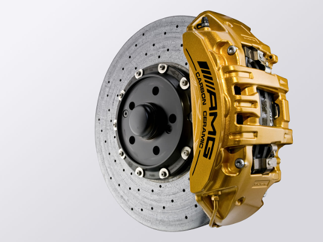
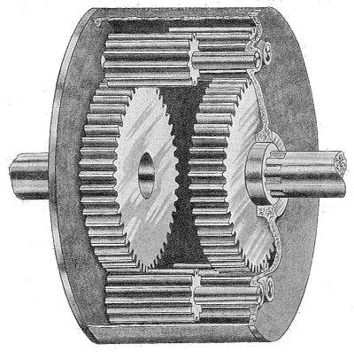
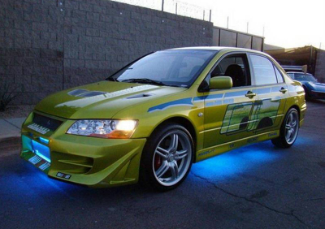

Poradnik tuningu dla zielonych
W tym poradniku przedstawimy wam najbardziej opłacalne części, które przemienią waszą maszynę w prawdziwego demona. 1. Amortyzatory Amortyzatory są najlepszym miejscem na start dla początkującego maniaka samochodowego. Polepszają sterowność, hamowanie i przyspieszenie. Zapewniają lepszy rozkład wagi pojazdu. Są jednym z najbardziej opłacalnych elementów do tuningu. Jeśli chcesz zamątować tylko jeden upgrade w swojej maszynie to amortyzatory są rozwiązaniem właśnie dla Ciebie. 2. Opony Opony są pierwszym miejscem, w którym twoja maszyna dotyka drogi. Jeśli chcesz, aby Twój samochód lepiej się prowadził świetnym miejscem na start jest dobry zestaw kółek. Moc i wydajność są dobre, ale jeśli nie masz przyczepności to wszystko na nic. Przy wyborze nowych opon zwróć uwagę na ich szerokość i średnicę. Redakcja rekomenduje gumy firmy Michelin. 3. Koła Koła są świetnym miejscem na start dla twojej wyścigówy. Staraj się wybierać lekkie kółka, gdyż nawet mały ubytek w masie jest w stanie wyraźnie poprawić przyspieszenie, hamowanie i sterowność. Twoja maszyna będzie w stanie zdecydowanie szybciej reagować na twoje polecenia. Rozmiar wybieranych kół zależy głównie od modelu twojej bestii, jednak pamiętaj, większe koła = większa prędkość. 4. Hamulce  Możesz nadrobić dużo czasu, próbując dogonić kogoś poprzez ciągłe, mocniejsze hamowanie niż on. Jeśli chcesz naprawdę duży zestaw hamulcowy to sprawdź romzmiar swoich kół, aby upewnić się że się nowe hamulce się tam zmieszczą. Jeśli zaś nie chcesz wydawać sporej sumy, możesz wymienić jedynie klocki twoich obecnych ściskaczy. Fabryczne hamulce są przystosowane do działania od około 37 °C do 315 °C. Hamulce wyścigowe są stworzone do operowania w znacznie wyższych, temperatuurach sięgających nawet 815 °C. 5. Dyferencjał  Wymiana dyferencjału jes najbardziej opłacalnym sposobem na polepszenie przyspieszenia w lini prostej i na zakrętach. 6. Silnik Ulepszaniem serca twojej besti powinienes zająć się w ostatniej kolejności. 7. Badass neon lights  Nie ma co zbędnie gadać. Obowiązkowy element każdego samochodu. Dodaje +20 KM.